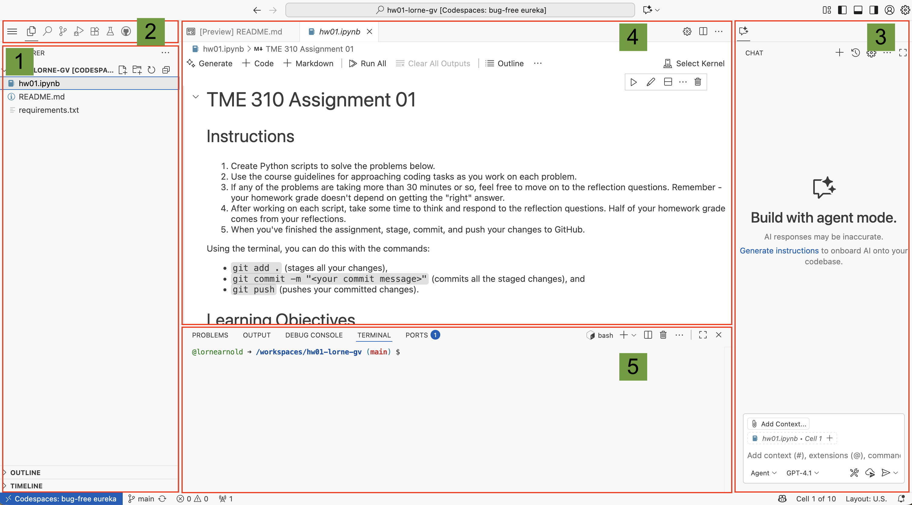

Coding platform: GitHub Codespace
The course is designed to be run through GitHub Codespaces, which provides a web-based coding environment with everything you need pre-installed. For every assignment, when you accept the assignment in GitHub Classroom, a new GitHub repo will be created for you automatically. You can start a codespace for the assignment by clicking on the “Code” dropdown and selecting “Create codespace on main.” You should only need to do this once for each assignment.
This will launch a new codespace with the assignment files.
It takes a few minutes for the codespace to get started and install all the requirements for the first time! Be patient - it’s essentially starting up a brand new computer from scratch. It will go faster the next time you open the codespace.
Sandbox
An un-graded “sandbox” assignment has been created so you can work on code independently of homework assignments if you’d like.
VS Code
The codespaces run VS Code in a web browser. There are a few main areas you’ll want to navigate to use VS Code:

Interface areas
- Primary sidebar: This area is set up to show the file explorer by default.
- Activity bar: The activity bar touches the primary sidebar and lets you select different content to show in the primary sidebar.
- Secondary sidebar: This area is set up to show the GitHub Copilot Chat. You can use this area to ask Copilot questions about your code.
- Editor: This is where your notebooks and scripts will open.
- Panel: This area sits beneath your editor and between the sidebars. This is where your Terminal and Jupyter Variables containers will be.
The positions of all the interface areas can be adjusted. Feel free to adjust them if you have a layout preference, but it can be a bit frustrating if you misplace something, so I recommend against it unless you’re familiar with VS Code and have a specific layout you prefer.
Saving and submitting your work
The way you submit your assignments with GitHub Classroom is by committing and pushing your changes. There are multiple ways to accomplish this, but I recommend using a few git commands in the terminal. The three commands are all you should need:
git add .This adds all the changes you’ve made to what will be committed.git commit -m "your message here"This commits the changes in your codespaace and attaches a message to them. Of course, you can replace the text in the example with whatever message you want to include. In general, commit messages are supposed to be a brief description of the changes you made since the last commit.git pushThis pushes your committed changes back to the repo.
You can create and push as many commits as you want. When grading, I’ll use whichever version existed at the time of the deadline unless you arrange something else with me. I recommend pushing your changes any time you’re planning to pause your work and close your codespace. The codespace should automatically save your changes and keep them, but it is possible to permanently lose changes if you delete the codespace (which is different than just closing the browser/tab) if they weren’t pushed to the repo.
GitHub Copilot
Your codespace includes the GitHub Copilot extension, which provides you with a powerful AI coding assistant. I encourage you to interact with Copilot and ask it questions about your code. It can write code for you based on instructions you provide and it can read your files to get additional context. In addition to experimenting with Copilot on your own, I encourage you to watch the Copilot videos listed on the Resources Page.
Regardless of how you use copilot, you are responsible for all the code and text you submit.
Some “removed” Copilot features
There are some things Copilot can do that I’ve turned off on your codespaces. The features aren’t truly removed, just suppressed. They aren’t turned off to prevent you from using them, it’s more that I think they’re more likely to cause problems than be helpful.
I’ve specifically configured Copilot to provide coding help based on where we’re at in the course. This is intended to prevent it from using Python language features we don’t cover in this class and may be difficult for you to interpret. If there are more advanced uses of Python you want to try, Copilot will help you with them if you ask it to “please override” the course’s coding assistance guidelines.
Breaking things
The codespace settings are all contained in the GitHub repos and you will have the ability to view, modify, and delete them. By default, I’ve set the codespace to hide these configuration files, but you’ll be able to see them in the repo. I’ve “hidden” them so that it’s difficult for you to accidentally break something about the codespace, not because I don’t want you to see them. If you have experience with the kinds of configuration files in the repo and you want to modify them, you may. But be warned: I can’t guarantee that I’ll be able to fix something if you break it and you’ll still be responsible for completing your assignments.